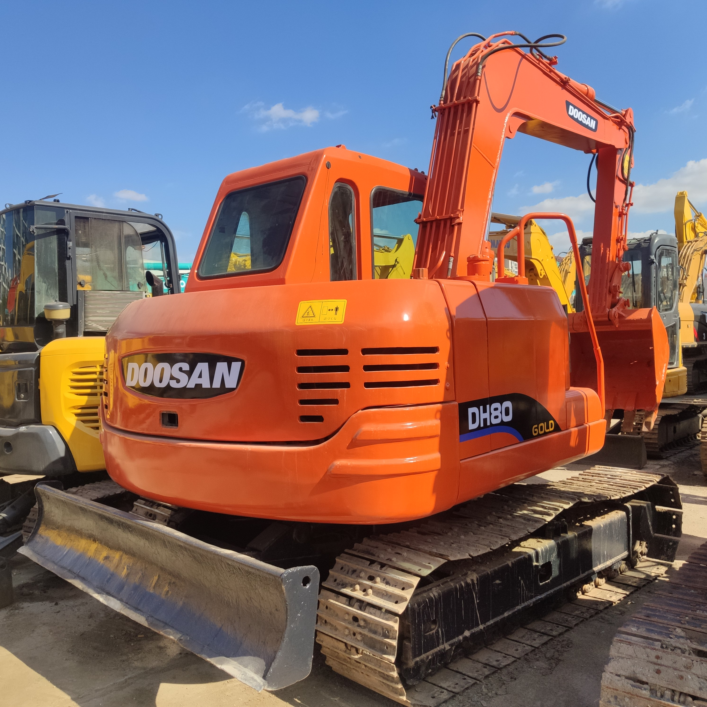

Refurbished Doosan DH80 Excavator
The Doosan DH80 is a compact and efficient excavator that offers exceptional performance and versatility, making it an ideal choice for both urban and rural excavation projects. Known for its robust build, powerful engine, and smooth hydraulic system, the Doosan DH80 Excavator is a top contender in the mid-range excavator market. When refurbished, this machine retains its high-quality performance at a fraction of the cost of a new model.
Honestly, it's almost impossible to buy a brand new excavator from China. They either don't exist or are made in China. If a Chinese seller tells you their Caterpillar/Komatsu/Volvo/Kobelco/Hitachi is brand new, they're lying. Therefore, a refurbished excavator is your best bet.

Here are the detailed specifications for a refurbished Doosan DH80-7 excavator:
Operating Weight and Dimensions
- Operating Weight: 8,000–8,300 kg
- Transport Length: ~6.1–6.3 meters
- Transport Width: ~2.3 meters
- Transport Height: ~2.6–2.7 meters
- Tail Swing Radius: ~1.6–1.8 meters
- Ground Clearance: ~400 mm
- Track Width: 450 mm standard
Engine and Powertrain
- Engine Model: Yanmar 4TNV98 or Doosan D24 (Tier 2 compliant)
- Rated Power Output: ~44–48 kW (59–64 hp) @ 2,200 rpm
- Maximum Torque: ~240–260 Nm
- Fuel Tank Capacity: ~130–150 liters
- Travel Speed: 2.6–5.1 km/h
- Swing Speed: ~10 rpm
- Gradeability: Up to 35°
Hydraulic System
- Main Pump Type: Variable displacement axial piston pump
- Flow Rate: ~2 × 100–110 L/min
- System Pressure: Up to 27.5 MPa
- Hydraulic Oil Capacity: ~140–160 liters
- Control System: Load-sensing with pilot-operated valves
- Boom/Arm/Bucket Priority: Configurable via control lever
Performance Metrics
- Bucket Capacity: 0.3–0.35 m³ (SAE heaped)
- Max Digging Depth: ~4.1–4.3 meters
- Max Reach (Horizontal): ~6.4–6.6 meters
- Max Dump Height: ~4.6–4.8 meters
- Bucket Digging Force: ~55–60 kN
- Arm Digging Force: ~40–45 kN
Cab and Operator Features
- Cab Type: ROPS/FOPS certified
- Display: Analog gauges or basic LCD monitor
- Controls: Pilot-operated joysticks with auxiliary hydraulic circuit
- Comfort: Adjustable seat, optional HVAC
- Visibility: Wide glass area, LED work lights
Smart Features and Efficiency
- Fuel Efficiency:
- Mechanical fuel injection
- Auto idle and engine shutdown
- Emissions Control: Tier 2 compliant (no DPF/SCR)
- Transportability: Easily trailerable under 9-ton class
Attachments Compatibility
- Standard Bucket: 0.3–0.35 m³
- Optional Tools: Hydraulic breaker, auger, compactor, ripper
- Quick Coupler: Manual or hydraulic options available
Refurbishment Scope
Refurbished DH80 units typically include:
- Engine Overhaul: Cylinder head, turbocharger, injectors, seals
- Hydraulic Restoration: Pump recalibration, valve block testing, hose replacement
- Electrical Diagnostics: Monitor, sensors, wiring harness
- Cab Reconditioning: Seat, joysticks, HVAC, repainting
- Structural Repairs: Boom/bucket welding, bushing replacement, undercarriage rebuild
Overview of the Doosan DH80 Excavator
The Doosan DH80 is part of the company's well-regarded lineup of hydraulic excavators. With a focus on reliability and performance, the DH80 is suited for a wide variety of tasks, including trenching, digging, landscaping, and site preparation. Its compact size allows it to operate in tight spaces, while its powerful engine and efficient hydraulics enable it to tackle tougher tasks with ease.
Key Specifications of the Doosan DH80
-
Operating Weight: Approximately 8,000 kg (17,637 lbs)
-
Engine Power: 55 kW (73 hp)
-
Max Digging Depth: Up to 4.5 meters (14.8 feet)
-
Max Reach: Approximately 6.6 meters (21.7 feet)
-
Bucket Capacity: Typically 0.3 to 0.4 cubic meters (10.6–14.1 cubic feet)
-
Fuel Tank Capacity: Around 160 liters (42.3 gallons)
-
Travel Speed: Max speed of 5.5 km/h (3.4 mph)
The Doosan DH80 Excavator is designed to be both powerful and efficient, allowing operators to complete tasks quickly while consuming less fuel. Its compact size makes it ideal for working in smaller, constrained spaces without sacrificing performance.
Performance and Efficiency
The Doosan DH80 offers a balance of power, precision, and fuel efficiency. The machine is designed to provide excellent digging force, smooth operation, and exceptional lifting capacity. Its 55 kW (73 hp) engine is capable of powering the machine through medium-duty tasks, while the hydraulic system ensures that digging, lifting, and material handling are performed smoothly and efficiently.
Key Performance Features:
-
High Digging Force: The Doosan DH80 is equipped with an efficient hydraulic system that delivers strong digging power, making it an excellent choice for trenching, foundation work, and general excavation.
-
Smooth Hydraulic Performance: The hydraulic system is designed for efficient, smooth, and responsive performance. Operators benefit from quick and precise control, whether they're lifting heavy loads or performing delicate tasks like grading.
-
Versatile Lifting Capacity: The Doosan DH80 offers a solid lifting capacity, making it an excellent choice for material handling, whether you're moving debris or lifting equipment. The machine's robust arm and boom construction ensure stability and power when lifting.
Durability and Build Quality
The Doosan DH80 Excavator is built to last. The undercarriage, boom, and arm are designed for heavy-duty use, ensuring that the machine remains reliable in harsh working conditions. Whether you're working in tight spaces on a construction site or maneuvering through rough terrain, the Doosan DH80 stands up to the demands of the job.
Key Durability Features:
-
Heavy-Duty Undercarriage: The undercarriage is reinforced for durability, allowing the Doosan DH80 to perform optimally even in challenging environments. The tracks are designed to provide stability on uneven ground, while the rollers and sprockets ensure smooth movement.
-
Sturdy Boom and Arm: The boom and arm are built to handle high stresses, ensuring the Doosan DH80 can perform digging and lifting tasks without compromising its integrity. These components are reinforced for long-term durability.
-
Weather-Resistant Components: The machine is designed to withstand extreme temperatures, rain, and dust, making it suitable for use in a variety of weather conditions. Its weatherproofed components ensure that the excavator operates reliably regardless of the environment.
Operator Comfort and Safety
Operator comfort and safety are prioritized in the design of the Doosan DH80 Excavator. The operator’s cabin is spacious and features intuitive controls that help reduce fatigue and increase efficiency during long working hours.
Key Comfort and Safety Features:
-
Spacious Operator Cabin: The cabin offers plenty of room for the operator, with adjustable seats, air conditioning, and easy-to-reach controls. This reduces operator fatigue and ensures that they can work efficiently over long shifts.
-
Good Visibility: Large windows and well-positioned mirrors provide excellent visibility of the working area, which helps operators stay aware of their surroundings and avoid accidents or obstacles.
-
Safety Features: The Doosan DH80 is equipped with essential safety features, including ROPS (Roll-Over Protection Structure) and FOPS (Falling Object Protective Structure), to protect the operator in case of an accident. Additionally, the machine includes emergency stop buttons and alarms for further safety.
Versatility with Attachments
One of the key advantages of the Doosan DH80 is its compatibility with a wide range of attachments. This makes the machine versatile and able to tackle various tasks with ease. Whether you're digging, lifting, or breaking, the Doosan DH80 can be outfitted with attachments to suit the job at hand.
-
Quick Coupler: The Doosan DH80 can be equipped with a quick coupler, allowing for easy attachment changes. This feature reduces downtime and increases productivity, as operators can quickly switch between different attachments.
-
Various Attachments: The machine can accommodate a variety of attachments such as buckets, hydraulic breakers, grapples, and augers. This adaptability makes the Doosan DH80 suitable for a range of tasks, from trenching and digging to demolition and material handling.
Benefits of a Refurbished Doosan DH80 Excavator
Opting for a refurbished Doosan DH80 Excavator offers several distinct advantages, especially for businesses looking to cut costs while maintaining quality and performance. Below are some of the key benefits of purchasing a refurbished unit:
Significant Cost Savings
A refurbished Doosan DH80 can save you a significant amount compared to purchasing a new one. During the refurbishment process, the machine is thoroughly inspected, repaired, and restored to near-new condition, ensuring it operates just as well as a new model at a much lower price.
High-Quality Performance
Refurbished Doosan DH80 Excavators are often rebuilt to factory specifications, meaning they perform just like new machines. With new components and an upgraded system, these excavators offer the same reliability, performance, and longevity, making them a great value for money.
Warranty and Support
Many refurbished units come with warranties that cover key components, offering peace of mind. Additionally, after-sales support is typically available, and spare parts are easy to source, making maintenance and repairs simple and cost-effective.
Maintenance Tips for the Doosan DH80 Excavator
To ensure the Doosan DH80 Excavator runs smoothly for years, regular maintenance is essential. Below are some basic maintenance tips:
-
Engine Maintenance: Regularly change the engine oil and filters to ensure the engine operates at peak efficiency. Monitor coolant levels and check for leaks to prevent overheating.
-
Hydraulic System: Inspect hydraulic hoses for wear and replace filters as needed. Ensure fluid levels are sufficient, and top up hydraulic oil when necessary.
-
Undercarriage: Regularly inspect the undercarriage for wear, including tracks, rollers, and sprockets. Lubricate the undercarriage regularly to reduce friction and prevent damage.
-
Cabin Care: Clean the cabin regularly to maintain a comfortable work environment. Ensure that all safety features, such as seat belts and ROPS, are functioning properly.
Conclusion
The Doosan DH80 Excavator is a compact yet powerful machine that excels in a variety of excavation and construction tasks. Whether you're digging, lifting, or handling materials, this machine provides excellent performance, durability, and operator comfort. Purchasing a refurbished Doosan DH80 Excavator offers significant cost savings while still delivering high-quality performance that matches a new model. With the right maintenance and care, a refurbished Doosan DH80 can provide years of reliable service on the job site, making it a smart investment for businesses looking to get the best value for their equipment dollars.
Our Commitment
- 2 years / 4000 hours warranty.
- EPA certified.
- No sweatshop labor.
Contacts

- [email protected]
- Youtube Instagram Facebook
- Navigation: G206 (Sishu Bridge) in Changfeng County, Hefei City, Anhui Province, 200 meters north to the east